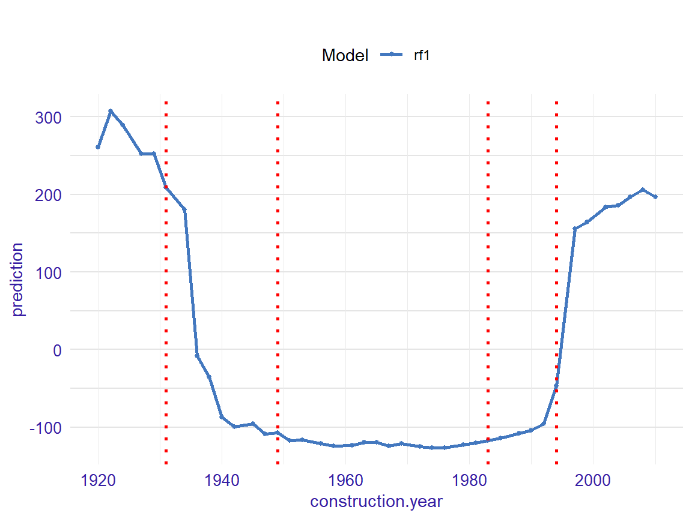
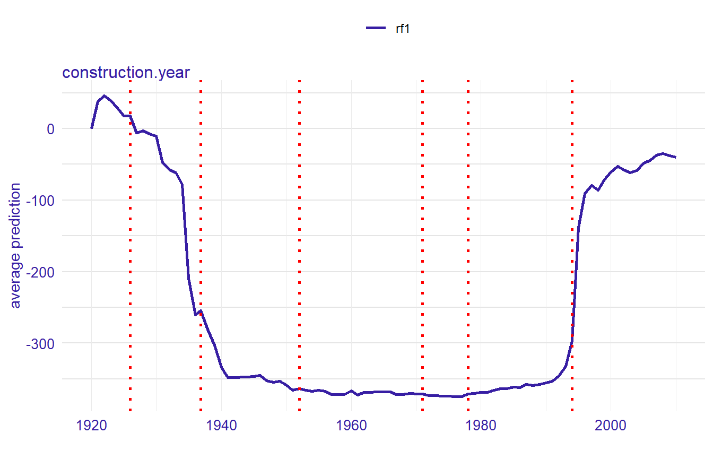
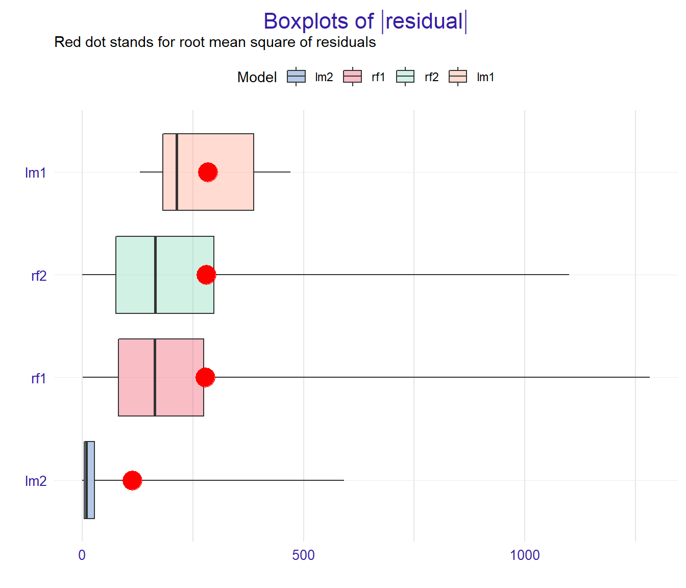

The SAFE package is a model agnostic tool for making an interpretable white-box model more accurate using alternative black-box model called surrogate model. Based on the complicated model, such as neural network or random forest, new features are being extracted and then used in the process of fitting a simpler interpretable model, improving its overall performance.
Getting started
The package can be installed from GitHub using the code below:
install.packages("devtools")
devtools::install_github("MI2DataLab/SAFE")Demo
In this vignette we present an example of an application of SAFE package. It is based on apartments and apartmentsTest datasets which come from DALEX package but are also available in SAFE package.
First we fit a random forest model to the original apartments dataset - this is our complex model that will serve us as a surrogate.
library(SAFE)
library(randomForest)
set.seed(111)
model_rf1 <- randomForest(m2.price ~ ., data = apartments)We also create an explainer object that will be used later to create new variables and at the end to compare models performance.
library(DALEX)
explainer_rf1 <- explain(model_rf1, data = apartmentsTest[1:3000,2:6], y = apartmentsTest[1:3000,1], label = "rf1")Now, we create a safe_extractor object using SAFE package and our surrogate model. Setting the argument verbose=FALSE stops progress bar from printing.
safe_extractor <- safe_extraction(explainer_rf1, penalty = 7, interactions = FALSE, verbose = FALSE)Now, let’s print summary for the new object we have just created.
print(safe_extractor)
#> Variable 'construction.year' - selected intervals:
#> (-Inf, 1931]
#> (1931, 1949]
#> (1949, 1983]
#> (1983, 1994]
#> (1994, Inf)
#> Variable 'surface' - selected intervals:
#> (-Inf, 33]
#> (33, 72]
#> (72, 101]
#> (101, 123]
#> (123, Inf)
#> Variable 'floor' - selected intervals:
#> (-Inf, 4]
#> (4, Inf)
#> Variable 'no.rooms' - selected intervals:
#> (-Inf, 3]
#> (3, Inf)
#> Variable 'district' - created levels:
#> Bemowo, Bielany, Ursus, Ursynow, Praga, Wola -> BemowoBielanyPragaUrsusUrsynowWola
#> Zoliborz, Mokotow, Ochota -> MokotowOchotaZoliborz
#> Srodmiescie -> SrodmiescieWe can see transormation propositions for all variables in our dataset.
In the plot below we can see which points have been chosen to be the breakpoints for a particular variable:
plot(safe_extractor, variable = "construction.year")
For factor variables we can observe in which order levels have been merged and what is the optimal clustering:
plot(safe_extractor, variable = "district")
Now we can use our safe_extractor object to create new categorical features in the given dataset.
data1 <- safely_transform_data(safe_extractor, apartmentsTest[3001:6000,], verbose = FALSE)| district | m2.price | construction.year | surface | floor | no.rooms | construction.year_new | surface_new | floor_new | no.rooms_new | district_new |
|---|---|---|---|---|---|---|---|---|---|---|
| Bielany | 3542 | 1979 | 21 | 6 | 1 | (1949, 1983] | (-Inf, 33] | (4, Inf) | (-Inf, 3] | BemowoBielanyPragaUrsusUrsynowWola |
| Srodmiescie | 5631 | 1997 | 107 | 2 | 4 | (1994, Inf) | (101, 123] | (-Inf, 4] | (3, Inf) | Srodmiescie |
| Bielany | 2989 | 1994 | 41 | 9 | 2 | (1983, 1994] | (33, 72] | (4, Inf) | (-Inf, 3] | BemowoBielanyPragaUrsusUrsynowWola |
| Ursynow | 3822 | 1968 | 28 | 2 | 2 | (1949, 1983] | (-Inf, 33] | (-Inf, 4] | (-Inf, 3] | BemowoBielanyPragaUrsusUrsynowWola |
| Ursynow | 2337 | 1971 | 146 | 3 | 6 | (1949, 1983] | (123, Inf) | (-Inf, 4] | (3, Inf) | BemowoBielanyPragaUrsusUrsynowWola |
| Ochota | 3381 | 1956 | 97 | 8 | 3 | (1949, 1983] | (72, 101] | (4, Inf) | (-Inf, 3] | MokotowOchotaZoliborz |
We can also perform feature selection if we wish. For each original feature it keeps exactly one of their forms - original one or transformed one.
vars <- safely_select_variables(safe_extractor, data1, which_y = "m2.price", verbose = FALSE)
data1 <- data1[,c("m2.price", vars)]
print(vars)
#> [1] "surface" "floor" "no.rooms"
#> [4] "construction.year_new" "district_new"It can be observed that for some features the original form was preffered and for others the transformed one.
Here are the first few rows for our data after feature selection:
| m2.price | surface | floor | no.rooms | construction.year_new | district_new |
|---|---|---|---|---|---|
| 3542 | 21 | 6 | 1 | (1949, 1983] | BemowoBielanyPragaUrsusUrsynowWola |
| 5631 | 107 | 2 | 4 | (1994, Inf) | Srodmiescie |
| 2989 | 41 | 9 | 2 | (1983, 1994] | BemowoBielanyPragaUrsusUrsynowWola |
| 3822 | 28 | 2 | 2 | (1949, 1983] | BemowoBielanyPragaUrsusUrsynowWola |
| 2337 | 146 | 3 | 6 | (1949, 1983] | BemowoBielanyPragaUrsusUrsynowWola |
| 3381 | 97 | 8 | 3 | (1949, 1983] | MokotowOchotaZoliborz |
Now, we perform transformations on another data that will be used later in explainers:
data2 <- safely_transform_data(safe_extractor, apartmentsTest[6001:9000,], verbose = FALSE)[,c("m2.price", vars)]Let’s fit the models to data containg newly created columns:
model_lm2 <- lm(m2.price ~ ., data = data1)
explainer_lm2 <- explain(model_lm2, data = data2, y = apartmentsTest[6001:9000,1], label = "lm2")
set.seed(111)
model_rf2 <- randomForest(m2.price ~ ., data = data1)
explainer_rf2 <- explain(model_rf2, data2, apartmentsTest[6001:9000,1], label = "rf2")Moreover, we create a linear model based on original apartments dataset and its corresponding explainer in order to check if our methodology improves results.
model_lm1 <- lm(m2.price ~ ., data = apartments)
explainer_lm1 <- explain(model_lm1, data = apartmentsTest[1:3000,2:6], y = apartmentsTest[1:3000,1], label = "lm1")Final step is the comparison of all the models we have created.
mp_lm1 <- model_performance(explainer_lm1)
mp_rf1 <- model_performance(explainer_rf1)
mp_lm2 <- model_performance(explainer_lm2)
mp_rf2 <- model_performance(explainer_rf2)plot(mp_lm1, mp_rf1, mp_lm2, mp_rf2, geom = "boxplot")
In the plot above we can see that the linear model based on transformed features has generally more accurate predictions that the one fitted to the original dataset.
References
- Python version of SAFE package
- SAFE article - the article about SAFE algorithm, including benchmark results obtained using Python version of SAFE package
The package was created as a part of master’s diploma thesis at Warsaw University of Technology at Faculty of Mathematics and Information Science by Anna Gierlak.